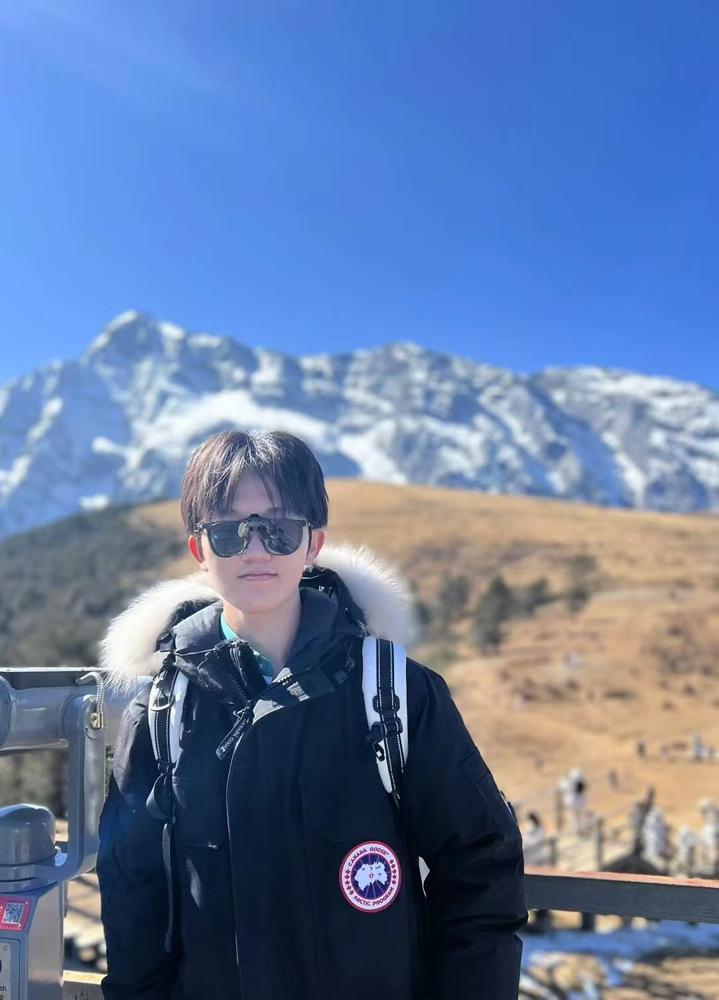

(at YuLong Mountain, Yunnan, China)
Haonan Ge 葛浩南
I am an B.S. student in Electrical and Computer Engineering at Southeast University. I am working toward a career in Software Engineer.
 HaonanGe82@gamil.com
HaonanGe82@gamil.com
 GitHub (Johnny040216)
GitHub (Johnny040216)
 LinkedIn
LinkedIn